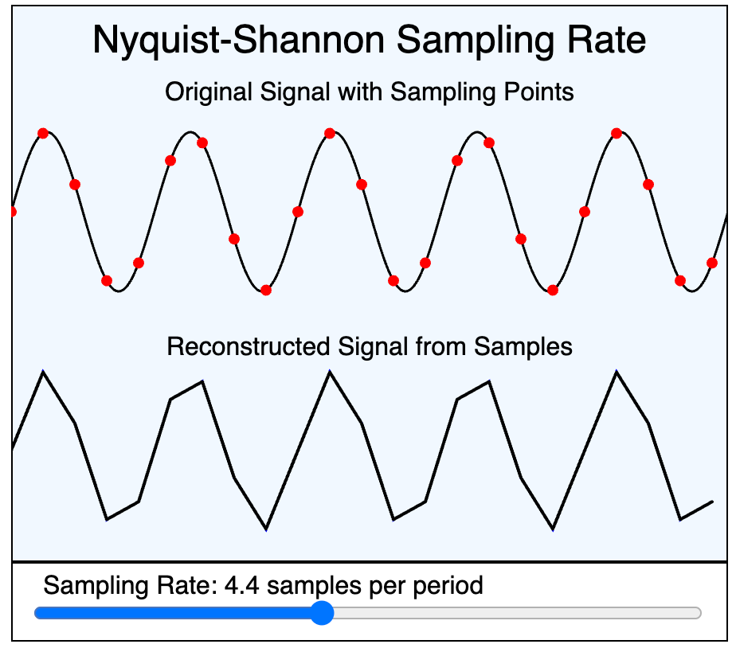

Nyquist-Shannon Sampling

Run the Nyquist-Shannon Sampling MicroSim Edit This MicroSim
Please help me create a p5.js simulation that helps
students understand Sampling and Aliasing. The Nyquist-Shannon
sampling theorem and the concept of aliasing involve understanding
how continuous signals are represented in discrete form. Grasping
how undersampling leads to frequency overlap (aliasing) can be non-intuitive.
I would like an Interactive p5.js program that can demonstrate how
varying the sampling rate affects the reconstructed signal.
By adjusting parameters in real-time, students can visualize
aliasing effects and the importance of adhering to the Nyquist rate.
Please create a p5.js simulation that allows students to use a
slider to adjust the sampling rate for a waveform using a slider.
Display two waveforms. One is the input with the samples drawn
as radius 7 red circles. The second waveform is one done from
the reconstruction of the sampling points.
Place the original on the top and the reconstruction under
the original.
Use the following template:
1 2 3 4 5 6 7 8 9 10 11 12 13 14 15 16 17 18 19 20 21 22 23 24 25 26 27 28 29 30 31 32 33 34 35 36 37 38 39 40 41 42 43 44 45 | |
ChatGPT Response
o1-preview Thought for 6 seconds
Sure! Below is a p5.js simulation that demonstrates sampling and aliasing. You can adjust the sampling rate using a slider to see how it affects the reconstructed signal.
Simulation Code
1 2 3 4 5 6 7 8 9 10 11 12 13 14 15 16 17 18 19 20 21 22 23 24 25 26 27 28 29 30 31 32 33 34 35 36 37 38 39 40 41 42 43 44 45 46 47 48 49 50 51 52 53 54 55 56 57 58 59 60 61 62 63 64 65 66 67 68 69 70 71 72 73 74 75 76 77 78 79 80 81 82 83 84 85 86 87 88 89 90 91 92 93 94 95 96 97 98 99 100 101 102 103 104 105 106 107 108 109 110 111 112 113 114 115 116 117 118 119 120 121 | |
How to Use the Simulation
-
Adjust the Sampling Rate: Use the slider at the bottom of the canvas to change the sampling rate. The sampling rate is displayed above the slider.
-
Observe the Top Graph: The top waveform represents the original signal. Red circles indicate the sampling points based on the current sampling rate.
-
Observe the Bottom Graph: The bottom waveform is reconstructed from the sampled points. As you adjust the sampling rate, notice how the reconstructed signal changes.
Explanation of the Code
Variables
samplingRateSlider: The slider control for adjusting the sampling rate.samplingRate: The current sampling rate value from the slider.signalFrequency: The frequency of the original signal.time,signal,sampledSignal: Arrays to store time values, original signal values, and sampled signal points, respectively.
setup()` Function
- Initializes the canvas and the slider.
- Generates time values and computes the original signal using a sine function.
draw() Function
- Clears the background and updates the sampling rate from the slider.
- Draws labels and the original signal waveform.
- Samples the original signal at intervals based on the sampling rate and draws red circles at the sampling points.
- Reconstructs the signal from the sampled points and draws it in the bottom half of the canvas.
Key Concepts Demonstrated
-
Sampling Rate: The number of samples taken per period of the signal. A higher sampling rate captures the signal more accurately.
-
Aliasing: When the sampling rate is too low (below the Nyquist rate), the reconstructed signal may differ significantly from the original, demonstrating aliasing effects.
Running the Simulation
To run this simulation:
- Copy the code above.
- Go to the p5.js online editor.
- Paste the code into the editor.
- Click the "Play" button to start the simulation.
Feel free to experiment with different signal frequencies or modify the code to explore further concepts related to sampling and aliasing.